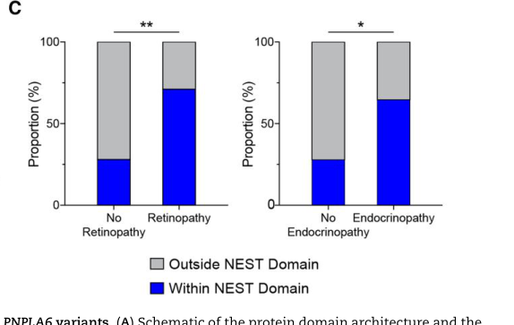

1. Disease Information
1.1 What is the disease?
BNS is a multisystem neurodegenerative syndrome that presents with the triad: - Cerebellar ataxia / cerebellar degeneration - Hypogonadotropic hypogonadism (HH) (often described clinically within anterior hypopituitarism) - Chorioretinal dystrophy / retinal degeneration
Primary literature defines BNS as “the triad of early-onset autosomal recessive cerebellar ataxia (ARCA), hypogonadotropic hypogonadism, and chorioretinal dystrophy.” (deik2014compoundheterozygouspnpla6 pages 1-2)
1.2 Key identifiers
- OMIM/MIM (disease): MIM #215470 (Boucher–Neuhäuser syndrome) (deik2014compoundheterozygouspnpla6 pages 1-2, he2022identificationofnovel pages 1-2)
- OMIM/MIM (gene): PNPLA6 MIM *603197 (deik2014compoundheterozygouspnpla6 pages 1-2)
- Other identifiers requested (Orphanet/ICD-10/ICD-11/MeSH/MONDO): Not found in the retrieved full-text excerpts; therefore cannot be asserted from this evidence set. (deik2014compoundheterozygouspnpla6 pages 1-2, he2022identificationofnovel pages 1-2)
1.3 Synonyms / alternative names
- BNS (common abbreviation) (he2022identificationofnovel pages 1-2, liampas2024twocasereports pages 1-5)
- Orthographic variants: Boucher–Neuhäuser, Boucher–Neuha¨user (deik2014compoundheterozygouspnpla6 pages 1-2)
- Historical phenotype description: “familial ataxia, hypogonadism and retinal degeneration” (reported as a historical descriptor in reviews of PNPLA6 phenotypes) (nanetti2022multifacetedandagedependent pages 9-10)
- Related/overlapping entities within PNPLA6 disorders: Gordon Holmes syndrome and others (deik2014compoundheterozygouspnpla6 pages 1-2, he2022identificationofnovel pages 1-2, liu2023pnpla6disorderswhat’s pages 3-4)
1.4 Evidence type (individual vs aggregated)
Evidence base is largely case reports/series aggregated in systematic reviews and cohort meta-analyses, including a large integrated dataset of published individuals with biallelic PNPLA6 variants (95 as of May 2023) and an expanded cohort of 118 individuals in later functional-genotype studies. (liu2023pnpla6disorderswhat’s pages 3-4, liu2024neuropathytargetesterase pages 4-6)
2. Etiology
2.1 Disease causal factors
Primary cause: biallelic pathogenic variants in PNPLA6, encoding neuropathy target esterase (NTE). BNS is repeatedly described as “a rare autosomal recessive syndrome caused by mutations in the PNPLA6 gene.” (he2022identificationofnovel pages 1-2)
Mechanistic framing: PNPLA6/NTE is an ER-associated patatin-like phospholipase/esterase involved in phospholipid homeostasis and trafficking; loss-of-function is supported by animal/cellular models. (liu2023pnpla6disorderswhat’s pages 1-3)
2.2 Risk factors
- Genetic risk: having biallelic pathogenic PNPLA6 variants (autosomal recessive). (he2022identificationofnovel pages 1-2, deik2014compoundheterozygouspnpla6 pages 2-5)
- Consanguinity can increase risk of homozygous variants (illustrated by affected siblings from a consanguineous family). (liampas2024twocasereports pages 1-5)
No environmental, infectious, or lifestyle risk factors specific to BNS were identified in the retrieved evidence.
2.3 Protective factors
No genetic or environmental protective factors were identified in the retrieved evidence.
2.4 Gene–environment interactions
Direct gene–environment interaction evidence for BNS is not present in the retrieved texts. Mechanistically, PNPLA6/NTE is historically linked to organophosphate-induced delayed neuropathy (OPIDN), which establishes environmental inhibition of NTE as neurotoxic, but this is not evidence of a specific GxE interaction for Mendelian BNS. (liu2023pnpla6disorderswhat’s pages 8-9)
3. Phenotypes
3.1 Core phenotype triad (with suggested HPO terms)
1) Cerebellar ataxia / cerebellar degeneration - Characteristics: variable onset (childhood to adulthood), often slowly progressive; MRI may show superior vermian/cerebellar atrophy. (deik2014compoundheterozygouspnpla6 pages 2-5, nanetti2022multifacetedandagedependent pages 3-5) - Suggested HPO: HP:0001251 (Ataxia); HP:0001272 (Cerebellar atrophy)
2) Hypogonadotropic hypogonadism / anterior hypopituitarism - Characteristics: may be recognized in the first two decades; hormone testing often shows low gonadotropins (LH/FSH) and broader pituitary hormone issues in the PNPLA6 spectrum. (deik2014compoundheterozygouspnpla6 pages 2-5, liampas2024twocasereports pages 1-5, liu2023pnpla6disorderswhat’s pages 3-4) - Suggested HPO: HP:0000044 (Hypogonadotropic hypogonadism); HP:0000871 (Hypopituitarism)
3) Chorioretinal dystrophy / retinal degeneration - Characteristics: onset widely variable (reported 1–64 years across PNPLA6 disorders); may mimic choroideremia; progression can lead to severe vision loss/blindness. (o’neil2019detailedretinalphenotype pages 6-7, liampas2024twocasereports pages 1-5, liu2023pnpla6disorderswhat’s pages 3-4) - Suggested HPO: HP:0000510 (Chorioretinal dystrophy); HP:0000546 (Retinal dystrophy); HP:0000505 (Visual impairment)
3.2 Additional, variably present features
- Peripheral axonal neuropathy (less common in some BNS descriptions; present in cohorts of PNPLA6 disorders). (liampas2024twocasereports pages 1-5, nanetti2022multifacetedandagedependent pages 3-5)
- HPO: HP:0003477 (Axonal neuropathy)
- Oculomotor abnormalities (e.g., gaze-evoked nystagmus, saccadic pursuit) reported in case descriptions. (deik2014compoundheterozygouspnpla6 pages 2-5)
- HPO: HP:0000639 (Nystagmus)
- Cognitive impairment observed in a subset of PNPLA6 cohort cases. (nanetti2022multifacetedandagedependent pages 3-5)
- HPO: HP:0100543 (Cognitive impairment)
- Hair anomalies occur in a minority of PNPLA6 disorders (more characteristic of Oliver–McFarlane end of spectrum). (liu2023pnpla6disorderswhat’s pages 3-4)
- HPO examples: HP:0002213 (Trichomegaly), HP:0001596 (Alopecia)
3.3 Frequency / statistics (best available from retrieved sources)
- Review-level counts: 95 published individuals with biallelic PNPLA6 variants as of May 2023 (PNPLA6 disorders overall). (liu2023pnpla6disorderswhat’s pages 3-4)
- Cerebellar atrophy/ataxia in up to ~90% of reported PNPLA6 cases. (liu2023pnpla6disorderswhat’s pages 3-4)
- Case-series (8 novel PNPLA6 cases): 7/8 progressive cerebellar syndrome; 5/8 HH; 2/8 chorioretinal dystrophy; 4/8 peripheral axonal neuropathy and/or spasticity; 3/8 cognitive impairment. (nanetti2022multifacetedandagedependent pages 3-5)
3.4 Quality of life impact
Direct QoL instrument results (EQ-5D/SF-36/PROMIS) were not found in the retrieved texts. Based on clinical manifestations, major impacts include mobility limitations from ataxia and disability from progressive visual loss. (liampas2024twocasereports pages 1-5, liu2023pnpla6disorderswhat’s pages 3-4)
4. Genetic / Molecular Information
4.1 Causal gene(s)
- PNPLA6 (patatin-like phospholipase domain-containing protein 6), encoding NTE. (he2022identificationofnovel pages 1-2, liu2023pnpla6disorderswhat’s pages 1-3)
4.2 Pathogenic variants (examples from primary literature)
BNS is caused by biallelic PNPLA6 variants (homozygous or compound heterozygous). Examples in retrieved sources include: - Compound heterozygous PNPLA6 mutations (e.g., p.Ser1045Leu and p.Ser1173Arg) in a genetically confirmed BNS case with late-onset ataxia. (deik2014compoundheterozygouspnpla6 pages 2-5) - Compound heterozygous variants including a frameshift and missense in a BNS case with predominantly retinal presentation (p.Arg1031GlnfsTer38 / p.Arg1183Gln). (o’neil2019detailedretinalphenotype pages 6-7) - Novel compound heterozygous variants identified by WES (c.2241del/p.Met748TrpfsTer65 and c.2986A>G/p.Thr996Ala) with RNA-level validation showing decreased PNPLA6 mRNA. (he2022identificationofnovel pages 1-2) - Homozygous missense c.3323G>A (p.Arg1108Gln) in two siblings. (liampas2024twocasereports pages 1-5)
Variant types reported across PNPLA6 disorders include missense, frameshift, splice-altering, and nonsense variants. In the Brain 2024 systematic cohort, 106 unique variants were summarized (70 missense; 35 predicted loss-of-function; 1 in-frame deletion), with enrichment of missense/in-frame variants in the catalytic domain. (liu2024neuropathytargetesterase pages 4-6)
4.3 Functional consequences
Multiple sources support loss-of-function as a principal mechanism, operationalized as reduced NTE hydrolase/esterase activity for many disease-associated variants. (liu2023pnpla6disorderswhat’s pages 1-3, liu2023neuropathytargetesterase pages 1-6)
4.4 Modifier genes / epigenetics / chromosomal abnormalities
No modifier genes, epigenetic signatures, or chromosomal abnormalities specific to BNS were identified in the retrieved evidence.
5. Environmental Information
No validated non-genetic environmental causes of Mendelian BNS were identified in the retrieved sources. However, PNPLA6/NTE is historically implicated in organophosphate neurotoxicity (OPIDN), indicating that environmental inhibition of NTE is neurotoxic in other contexts and motivates biomarker measurement in exposure studies. (liu2023pnpla6disorderswhat’s pages 8-9, NCT00671866 chunk 1)
6. Mechanism / Pathophysiology
6.1 Molecular function and pathways
PNPLA6 encodes NTE, described as a patatin-like serine hydrolase on the cytoplasmic face of the ER with: - Phospholipase B activity (deacylation of glycerophospholipids) - Strong lysophospholipase activity - Roles in phosphatidylcholine (PC) homeostasis (CDP-choline/Kennedy pathway), membrane trafficking, and axonal integrity. (liu2023pnpla6disorderswhat’s pages 1-3)
Suggested GO terms (biological process / molecular function; provisional) - GO:0006644 (phospholipid metabolic process) - GO:0004620 (phospholipase activity) - GO:0047499 (phospholipase B activity) - GO:0052689 (carboxylic ester hydrolase activity) - GO:0005789 (endoplasmic reticulum membrane; cellular component)
6.2 Causal chain (conceptual)
1) Biallelic PNPLA6 variants → 2) Reduced NTE enzymatic activity and disrupted phospholipid remodeling/homeostasis at ER membranes → 3) tissue vulnerability in retina (photoreceptors/RPE), cerebellum (Purkinje cell systems), and pituitary–gonadal axis → 4) clinical triad of retinopathy, ataxia, hypogonadotropic hypogonadism.
A key 2024 advance is that residual NTE activity can be used as a quantitative intermediate phenotype that predicts retinopathy and endocrinopathy risk. (liu2024neuropathytargetesterase pages 1-2, liu2024neuropathytargetesterase pages 7-9)
6.3 Recent (2023–2024) genotype:activity:phenotype relationships
In Brain (May 2024), Liu et al. report: - Cohort: 23 new + 95 reported individuals. (liu2024neuropathytargetesterase pages 1-2) - Variant functional assay: measured esterase activity for 46 disease-associated and 20 common variants; reclassified 36 as pathogenic and 10 as likely pathogenic. (liu2024neuropathytargetesterase pages 1-2) - Clinical subtype activity differences: SPG39 mean residual activity ~51% (n=12) vs BNHS ~28% (n=19) and OMCS/LNMS ~28% (n=26). (liu2024neuropathytargetesterase pages 4-6) - Mouse allelic series: <40% NTE activity was embryonic lethal; retinal degeneration onset ~40–50% residual activity. (liu2024neuropathytargetesterase pages 7-9)
These results support expert interpretation that PNPLA6 syndromic labels represent a continuum and that functional enzyme activity can serve both diagnostic and prognostic roles, potentially enabling trial stratification. (liu2024neuropathytargetesterase pages 1-2)
6.4 Model organism evidence (authoritative sources)
- Chickens (OPIDN): OPIDN requires ~70% inhibition of NTE activity via “aging.” (liu2023pnpla6disorderswhat’s pages 8-9)
- Drosophila (swiss-cheese; sws): sws loss causes rapid age-dependent neurodegeneration with ~20% more PC, ER stress signatures, and partial rescue by TUDCA (ER stress inhibitor). (liu2023pnpla6disorderswhat’s pages 8-9)
- Mouse: global Pnpla6 knockout embryonic lethal; neuronal conditional KO shows hippocampal vacuolization, neuronal loss (including Purkinje cells) and axonal lesions. (liu2023pnpla6disorderswhat’s pages 8-9)
Suggested CL terms (cell types; provisional) - Purkinje cell: CL:0000121 - Retinal photoreceptor cell: CL:0000210 - Retinal pigment epithelial cell: CL:0000088
7. Anatomical Structures Affected
Organ/system level (with UBERON suggestions; provisional)
- Cerebellum (UBERON:0002037) (deik2014compoundheterozygouspnpla6 pages 2-5, liu2023pnpla6disorderswhat’s pages 3-4)
- Retina / choroid / RPE (UBERON:0000966 for retina; RPE is part of eye tissues) (o’neil2019detailedretinalphenotype pages 6-7, liu2023pnpla6disorderswhat’s pages 3-4)
- Pituitary gland / hypothalamic–pituitary axis (UBERON:0000007 for pituitary) (liu2023pnpla6disorderswhat’s pages 3-4)
Subcellular localization
- Endoplasmic reticulum membrane (GO:0005789) for PNPLA6/NTE. (liu2023pnpla6disorderswhat’s pages 1-3)
8. Temporal Development
Onset
Across PNPLA6 disorders (including BNS): - Gait disturbance: 1–55 years - Visual impairment: 1–64 years - Anterior hypopituitarism: birth–25 years - Hair anomalies: birth–18 years
These ranges reflect substantial heterogeneity and age-dependent penetrance of sub-phenotypes. (liu2023pnpla6disorderswhat’s pages 3-4)
Progression
Progression can be slow: - In an 8-patient PNPLA6 series, cerebellar symptoms had mean onset 31 years (range 9–55) and were “very slow” in progression; most had progressive cerebellar syndrome. (nanetti2022multifacetedandagedependent pages 3-5)
9. Inheritance and Population
Inheritance
- Autosomal recessive inheritance due to biallelic PNPLA6 variants is consistently reported. (he2022identificationofnovel pages 1-2, liampas2024twocasereports pages 1-5)
Epidemiology
No prevalence/incidence per population was identified in the retrieved full texts. Best available “epidemiology-like” statistic is literature case count: - 95 published individuals with biallelic PNPLA6 variants (as of May 2023). (liu2023pnpla6disorderswhat’s pages 3-4)
Population genetics
No carrier frequency estimates or founder variants were identified in the retrieved evidence.
10. Diagnostics
10.1 Clinical tests / evaluations used in practice
Across case reports and reviews, diagnosis is typically assembled from multisystem evaluation: - Brain MRI: cerebellar atrophy, often vermian/superior cerebellar involvement. (deik2014compoundheterozygouspnpla6 pages 2-5, nanetti2022multifacetedandagedependent pages 3-5) - Ophthalmology: fundus exam, OCT, ERG, visual fields/perimetry; can reveal outer retinal loss and chorioretinal atrophy; presentations may mimic choroideremia, necessitating careful differential diagnosis. (deik2014compoundheterozygouspnpla6 pages 2-5, o’neil2019detailedretinalphenotype pages 6-7) - Endocrine testing: gonadotropins (LH/FSH), sex steroids; broader pituitary hormone panels depending on presentation. (deik2014compoundheterozygouspnpla6 pages 2-5, he2022identificationofnovel pages 1-2) - Neurophysiology: EMG/NCS for mild/subclinical axonal neuropathy. (deik2014compoundheterozygouspnpla6 pages 2-5)
10.2 Genetic testing
- Whole-exome sequencing (WES) with segregation testing is commonly used; authors explicitly state “Gene sequencing is currently the primary diagnostic method.” (he2022identificationofnovel pages 1-2)
- Emerging 2024 evidence supports adding functional NTE activity assays for variant classification and phenotype prediction. (liu2024neuropathytargetesterase pages 1-2)
10.3 Differential diagnosis
Not comprehensively enumerated in retrieved texts. One practical point is that PNPLA6-associated chorioretinal dystrophy can mimic choroideremia-like presentations, and thus PNPLA6 should be considered in diffuse chorioretinal atrophies with subtle systemic signs. (o’neil2019detailedretinalphenotype pages 6-7)
11. Outcome / Prognosis
Quantitative survival/life expectancy estimates were not found in the retrieved evidence.
Best available natural-history/prognosis statements: - Vision: chorioretinal dystrophy “leads to variable decreased visual acuity, even blindness.” (liampas2024twocasereports pages 1-5) - Some PNPLA6 disorders (milder spectrum) retain ambulation into adulthood with minimal/moderate aid. (liu2023pnpla6disorderswhat’s pages 3-4) - Slow progression of cerebellar syndrome has been reported with long disease duration in case series. (nanetti2022multifacetedandagedependent pages 3-5)
12. Treatment
No disease-modifying therapy is established in the retrieved evidence. Management is supportive and multidisciplinary.
12.1 Pharmacotherapy / endocrine replacement
- Case report supportive regimen included hormone replacement therapy and vitamin supplementation (B12, C, E). (liampas2024twocasereports pages 1-5)
Suggested MAXO terms (provisional) - MAXO:0000258 (Hormone replacement therapy) - MAXO:0000747 (Vitamin supplementation)
12.2 Rehabilitation / supportive care
Direct rehabilitation trial data were not present in the retrieved texts. Based on multi-system involvement, supportive care typically includes neurology/ataxia management, vision support, and endocrine replacement/surveillance. (liu2023pnpla6disorderswhat’s pages 3-4, liampas2024twocasereports pages 1-5)
12.3 Experimental/clinical trials
No BNS-specific interventional trials were identified in the retrieved clinical-trials search. - An observational trial on organophosphate exposure measures NTE biomarkers but is not a therapeutic trial for BNS and lists “Peripheral Neuropathy” as condition (NCT00671866). (NCT00671866 chunk 1)
13. Prevention
No primary prevention exists for Mendelian BNS beyond reproductive/genetic counseling.
Secondary prevention conceptually includes: - Early recognition of retinal degeneration and pituitary hormone deficiencies for timely supportive interventions. (o’neil2019detailedretinalphenotype pages 6-7, liu2023pnpla6disorderswhat’s pages 3-4)
14. Other Species / Natural Disease
Naturally occurring BNS as a veterinary entity was not identified in the retrieved evidence.
However, PNPLA6 is evolutionarily conserved with an orthologue in Drosophila (swiss-cheese; sws) used to model neurodegeneration and lipid dysregulation. (liu2023pnpla6disorderswhat’s pages 8-9)
15. Model Organisms
Key models and how they recapitulate disease biology
- Drosophila sws mutants: age-dependent neurodegeneration, altered phospholipids, ER stress; partial pharmacologic rescue (TUDCA). (liu2023pnpla6disorderswhat’s pages 8-9)
- Mouse Pnpla6 allelic series (2024): demonstrates activity thresholds for viability and retinal degeneration and provides translational evidence for NTE activity as a biomarker. (liu2024neuropathytargetesterase pages 7-9)
Recent developments and expert analysis (2023–2024)
Conceptual shift: discrete syndromes → continuous PNPLA6 spectrum
A 2023 ophthalmic-genetics review frames PNPLA6-related conditions (including BNS) as “PNPLA6-opathies” across a spectrum and highlights a choroideremia-like retinal phenotype and multisystem involvement requiring integrated diagnosis. (liu2023pnpla6disorderswhat’s pages 3-4)
Functional stratification: NTE activity as diagnostic/prognostic biomarker (2024)
The 2024 Brain study provides a quantitative model linking biallelic genotype to residual NTE activity and to the probability of retinopathy/endocrinopathy, and proposes NTE as a biomarker “paving the way for therapeutic trials.” (liu2024neuropathytargetesterase pages 1-2)
Figure evidence supporting these claims is available from cropped panels showing (i) variant domain associations with retinopathy/endocrinopathy and (ii) activity-phenotype correlations and (iii) activity thresholds for retinopathy in vivo. (liu2024neuropathytargetesterase media cbbab372, liu2024neuropathytargetesterase media f1acab95, liu2024neuropathytargetesterase media d77bd8b8)
Key sources table (prioritizing 2023–2024)
Table (click to expand)
| Year | Citation (first author, journal) | Study type (review/case series/mechanistic) | Key contributions for BNS (definition/triad; cohort size; key stats like NTE activity means/thresholds; diagnostic insights) | URL/DOI | Notes (PMID if known—leave blank if not present in text) |
|---|---|---|---|---|---|
| 2024 | Liu, Brain | Mechanistic + cohort + systematic review | PNPLA6 disorders placed on a continuous spectrum including Boucher–Neuhäuser syndrome (BNHS). Cohort: 23 new patients + 95 previously reported individuals. Functional assay measured 46 disease-associated and 20 common variants; 36 variants reclassified as pathogenic and 10 as likely pathogenic. Synthetic residual NTE activity differed by phenotype: SPG39 mean ~51% (n=12) vs BNHS ~28% (n=19) and OMCS/LNMS ~28% (n=26); lower activity associated with retinopathy/endocrinopathy, with reported threshold-type observations for endocrine/ophthalmic disease below ~32% and retinal degeneration around 40–50% residual activity; mouse data supported retinopathy threshold and embryonic lethality below 40% activity. Supports NTE activity as a biomarker for therapeutic trials. (liu2024neuropathytargetesterase pages 1-2, liu2024neuropathytargetesterase pages 4-6, liu2023neuropathytargetesterase pages 10-14, liu2024neuropathytargetesterase pages 7-9) | https://doi.org/10.1093/brain/awae055 | |
| 2023 | Liu, Ophthalmic Genetics | Review | Defines five PNPLA6 disorders, including Boucher–Neuhäuser syndrome. States PNPLA6/NTE is involved in phospholipid homeostasis and trafficking; animal and cellular models support loss-of-function. As of May 2023, 95 published individuals with biallelic PNPLA6 variants. Cerebellar atrophy/ataxia reported in up to ~90% of cases. BNHS distinguished from Gordon–Holmes by added chorioretinal dystrophy. Diagnostic insights: neurological imaging for cerebellar atrophy, ERG/retinal imaging/visual fields for chorioretinal dystrophy, hormonal testing for anterior hypopituitarism, and exam for hair anomalies. (liu2023pnpla6disorderswhat’s pages 3-4, liu2023pnpla6disorderswhat’s pages 4-6, liu2023pnpla6disorderswhat’s pages 1-3) | https://doi.org/10.1080/13816810.2023.2254830 | |
| 2024 | Liampas, Molecular Biology Reports | Case reports | Two siblings with a novel homozygous PNPLA6 missense variant. Reiterates classical BNS triad: hypogonadotropic hypogonadism, spinocerebellar ataxia, and chorioretinal dystrophy; notes peripheral axonal neuropathy can occur. Provides temporal guidance: HH often in first two decades; ataxia usually before early adulthood but can be late; chorioretinal dystrophy usually before age 50 and may progress to severe visual loss/blindness. Diagnostic workup included MRI, ophthalmologic assessment, endocrine evaluation, electrophysiology, WES and Sanger segregation. (liampas2024twocasereports pages 1-5) | https://doi.org/10.1007/s11033-024-09515-4 | |
| 2022 | He, Frontiers in Genetics | Case report + variant analysis/systematic review | Defines BNS as a rare autosomal recessive PNPLA6 disorder with the triad of cerebellar ataxia, chorioretinal dystrophy, and hypogonadotropic hypogonadism; gives MIM 215470. Reports a 17-year-old with progressive night blindness from age 4, primary amenorrhea, absent secondary sexual development, retinal pigmentary degeneration, and CHH without current ataxia. Identified compound heterozygous PNPLA6 variants by WES; RT-PCR showed reduced PNPLA6 mRNA. Diagnostic insight: detailed ophthalmic exam, endocrine panels, pituitary/pelvic imaging, bone age X-ray, WES/Sanger; authors note gene sequencing is currently the primary diagnostic method. (he2022identificationofnovel pages 1-2) | https://doi.org/10.3389/fgene.2022.810537 | |
| 2022 | Nanetti, Frontiers in Neurology | Case series + literature review | Reviews age-dependent PNPLA6 phenotypes and includes BN presentations. Across eight new PNPLA6 cases: 7/8 had cerebellar ataxia, 5/8 hypogonadotropic hypogonadism, 2/8 chorioretinal dystrophy; cerebellar symptoms mean onset 31 years (range 9–55) with very slow progression. Notes early-onset presentations may start with chorioretinal dystrophy, juvenile cases with HH, adult cases with ataxia. MRI may show cerebellar atrophy (often superior/dorsal vermis) and severe cerebellar atrophy in BN cases. Recommends multidisciplinary assessment and PNPLA6 screening in late-onset/cANVAS-like ataxia when RFC1 expansions are absent. (nanetti2022multifacetedandagedependent pages 9-10, nanetti2022multifacetedandagedependent pages 3-5) | https://doi.org/10.3389/fneur.2021.793547 | |
| 2019 | O’Neil, Ophthalmic Genetics | Deep phenotyping case report | Shows that PNPLA6-associated BNS may present with predominantly retinal findings and subtle systemic abnormalities, mimicking choroideremia. Ophthalmic workup included SD-OCT, ERG, kinetic fields, autofluorescence imaging; systemic confirmation came from hypogonadotropic hypogonadism and cerebellar vermis hypoplasia on MRI. Highlights the need to consider PNPLA6/BNS in diffuse chorioretinal atrophies and to combine ophthalmic phenotyping with systemic review and genetic testing. (o’neil2019detailedretinalphenotype pages 6-7) | https://doi.org/10.1080/13816810.2019.1605392 | |
| 2014 | Deik, Journal of Neurology | Case report + genetics | Landmark report confirming compound heterozygous PNPLA6 mutations as a cause of BNS with late-onset ataxia. Uses MIM #215470 for BNS and emphasizes the triad of autosomal recessive cerebellar ataxia, hypogonadotropic hypogonadism, and chorioretinal dystrophy. Diagnostic workup included fundoscopy/OCT, ERG, visual fields, endocrine testing (low LH/FSH), brain MRI showing superior cerebellar/vermian atrophy, EMG/NCS showing mild distal axonal neuropathy, and PNPLA6 sequencing. Also notes possible cognitive involvement and subclinical polyneuropathy. (deik2014compoundheterozygouspnpla6 pages 11-12, deik2014compoundheterozygouspnpla6 pages 2-5, deik2014compoundheterozygouspnpla6 pages 1-2) | https://doi.org/10.1007/s00415-014-7516-3 | |
| 2022 | Kretzschmar, Metabolites | Mechanistic review | Reviews PNPLA6/NTE as an evolutionarily conserved phospholipase first linked to organophosphate-induced delayed neuropathy and later to inherited disorders including BNS. Summarizes normal role in lipid homeostasis and model-system evidence: mouse brain conditional knockout causes age-related neurodegeneration, complete knockout is embryonic lethal, and Drosophila swiss-cheese loss causes progressive locomotor defects and neurodegeneration. Useful for mechanistic context underlying BNS/PNPLA6 loss-of-function. (liu2023pnpla6disorderswhat’s pages 8-9) | https://doi.org/10.3390/metabo12040284 |
Table: This table summarizes the most useful recent and foundational sources for Boucher–Neuhäuser syndrome within the broader PNPLA6 disorder spectrum. It highlights how each paper contributes evidence on definition, genotype–phenotype correlations, diagnostics, and mechanistic understanding.
Direct abstract quotes (as available in retrieved context)
- He et al. 2022 (Frontiers in Genetics) abstract includes: “Boucher–Neuhäuser syndrome (BNS, MIM 215470) is a rare autosomal recessive syndrome caused by mutations in the PNPLA6 gene.” (he2022identificationofnovel pages 1-2)
- O’Neil et al. 2019 abstract includes: “PNPLA6-associated retinal degenerations can present with predominantly retinal findings and subtle systemic abnormalities and should be considered in the differential diagnosis of diffuse chorioretinal atrophies.” (o’neil2019detailedretinalphenotype pages 6-7)
(Additional verbatim abstract text for Liu et al. 2024 and Liu & Hufnagel 2023 was not captured in the provided excerpts; therefore, only non-verbatim extraction is reported for those papers.) (liu2024neuropathytargetesterase pages 1-2, liu2023pnpla6disorderswhat’s pages 3-4)
Evidence gaps relative to the requested template
- MONDO / Orphanet / ICD-10 / ICD-11 / MeSH identifiers: not present in retrieved full texts; would require direct querying of those databases.
- Prevalence/incidence estimates: not provided in retrieved literature excerpts; current best quantitative evidence is published case counts.
- Controlled treatment studies: no interventional trials specific to BNS identified in retrieved evidence.
References
-
(deik2014compoundheterozygouspnpla6 pages 1-2): A. Deik, Brooke Johannes, J. Rucker, E. Sánchez, S. Brodie, E. Deegan, K. Landy, Y. Kajiwara, S. Scelsa, R. Saunders-Pullman, R. Saunders-Pullman, and C. Paisán-Ruiz. Compound heterozygous pnpla6 mutations cause boucher–neuhäuser syndrome with late-onset ataxia. Journal of Neurology, 261:2411-2423, Sep 2014. URL: https://doi.org/10.1007/s00415-014-7516-3, doi:10.1007/s00415-014-7516-3. This article has 44 citations and is from a domain leading peer-reviewed journal.
-
(he2022identificationofnovel pages 1-2): Junyu He, Xin Liu, Liyi Liu, Shaohao Zeng, Shuanghong Shan, and Zhihong Liao. Identification of novel compound heterozygous variants of the pnpla6 gene in boucher–neuhäuser syndrome. Frontiers in Genetics, Feb 2022. URL: https://doi.org/10.3389/fgene.2022.810537, doi:10.3389/fgene.2022.810537. This article has 8 citations and is from a peer-reviewed journal.
-
(liu2023pnpla6disorderswhat’s pages 3-4): James Liu and Robert B. Hufnagel. Pnpla6 disorders: what’s in a name? Ophthalmic Genetics, 44:530-538, Sep 2023. URL: https://doi.org/10.1080/13816810.2023.2254830, doi:10.1080/13816810.2023.2254830. This article has 15 citations and is from a peer-reviewed journal.
-
(liu2024neuropathytargetesterase pages 1-2): James Liu, Yi He, Cara Lwin, Marina Han, Bin Guan, Amelia Naik, Chelsea Bender, Nia Moore, Laryssa A Huryn, Yuri V Sergeev, Haohua Qian, Yong Zeng, Lijin Dong, Pinghu Liu, Jingqi Lei, Carl J Haugen, Lev Prasov, Ruifang Shi, Hélène Dollfus, Petros Aristodemou, Yannik Laich, Andrea H Németh, John Taylor, Susan Downes, Maciej R Krawczynski, Isabelle Meunier, Melissa Strassberg, Jessica Tenney, Josephine Gao, Matthew A Shear, Anthony T Moore, Jacque L Duncan, Beatriz Menendez, Sarah Hull, Andrea L Vincent, Carly E Siskind, Elias I Traboulsi, Craig Blackstone, Robert A Sisk, Virginia Miraldi Utz, Andrew R Webster, Michel Michaelides, Gavin Arno, Matthis Synofzik, and Robert B Hufnagel. Neuropathy target esterase activity defines phenotypes among pnpla6 disorders. Brain : a journal of neurology, 147:2085-2097, May 2024. URL: https://doi.org/10.1093/brain/awae055, doi:10.1093/brain/awae055. This article has 10 citations.
-
(liu2024neuropathytargetesterase pages 4-6): James Liu, Yi He, Cara Lwin, Marina Han, Bin Guan, Amelia Naik, Chelsea Bender, Nia Moore, Laryssa A Huryn, Yuri V Sergeev, Haohua Qian, Yong Zeng, Lijin Dong, Pinghu Liu, Jingqi Lei, Carl J Haugen, Lev Prasov, Ruifang Shi, Hélène Dollfus, Petros Aristodemou, Yannik Laich, Andrea H Németh, John Taylor, Susan Downes, Maciej R Krawczynski, Isabelle Meunier, Melissa Strassberg, Jessica Tenney, Josephine Gao, Matthew A Shear, Anthony T Moore, Jacque L Duncan, Beatriz Menendez, Sarah Hull, Andrea L Vincent, Carly E Siskind, Elias I Traboulsi, Craig Blackstone, Robert A Sisk, Virginia Miraldi Utz, Andrew R Webster, Michel Michaelides, Gavin Arno, Matthis Synofzik, and Robert B Hufnagel. Neuropathy target esterase activity defines phenotypes among pnpla6 disorders. Brain : a journal of neurology, 147:2085-2097, May 2024. URL: https://doi.org/10.1093/brain/awae055, doi:10.1093/brain/awae055. This article has 10 citations.
-
(liampas2024twocasereports pages 1-5): Andreas Liampas, Paschalis Nicolaou, Christina Votsi, Anthi Georghiou, Kyproula Christodoulou, George A Tanteles, and Marios Pantzaris. Two case reports of a novel missense mutation in the pnpla6 gene in two siblings with chorioretinal dystrophy, hypogonadotropic hypogonadism, and cerebellar ataxia. Molecular biology reports, 51 1:590, Apr 2024. URL: https://doi.org/10.1007/s11033-024-09515-4, doi:10.1007/s11033-024-09515-4. This article has 0 citations and is from a peer-reviewed journal.
-
(nanetti2022multifacetedandagedependent pages 9-10): Lorenzo Nanetti, Daniela Di Bella, Stefania Magri, Mario Fichera, Elisa Sarto, Anna Castaldo, Alessia Mongelli, Silvia Baratta, Silvia Fenu, Marco Moscatelli, Maria Teresa Bonati, Andrea Martinuzzi, Caterina Mariotti, and Franco Taroni. Multifaceted and age-dependent phenotypes associated with biallelic pnpla6 gene variants: eight novel cases and review of the literature. Frontiers in Neurology, Jan 2022. URL: https://doi.org/10.3389/fneur.2021.793547, doi:10.3389/fneur.2021.793547. This article has 18 citations and is from a peer-reviewed journal.
-
(liu2023pnpla6disorderswhat’s pages 1-3): James Liu and Robert B. Hufnagel. Pnpla6 disorders: what’s in a name? Ophthalmic Genetics, 44:530-538, Sep 2023. URL: https://doi.org/10.1080/13816810.2023.2254830, doi:10.1080/13816810.2023.2254830. This article has 15 citations and is from a peer-reviewed journal.
-
(deik2014compoundheterozygouspnpla6 pages 2-5): A. Deik, Brooke Johannes, J. Rucker, E. Sánchez, S. Brodie, E. Deegan, K. Landy, Y. Kajiwara, S. Scelsa, R. Saunders-Pullman, R. Saunders-Pullman, and C. Paisán-Ruiz. Compound heterozygous pnpla6 mutations cause boucher–neuhäuser syndrome with late-onset ataxia. Journal of Neurology, 261:2411-2423, Sep 2014. URL: https://doi.org/10.1007/s00415-014-7516-3, doi:10.1007/s00415-014-7516-3. This article has 44 citations and is from a domain leading peer-reviewed journal.
-
(liu2023pnpla6disorderswhat’s pages 8-9): James Liu and Robert B. Hufnagel. Pnpla6 disorders: what’s in a name? Ophthalmic Genetics, 44:530-538, Sep 2023. URL: https://doi.org/10.1080/13816810.2023.2254830, doi:10.1080/13816810.2023.2254830. This article has 15 citations and is from a peer-reviewed journal.
-
(nanetti2022multifacetedandagedependent pages 3-5): Lorenzo Nanetti, Daniela Di Bella, Stefania Magri, Mario Fichera, Elisa Sarto, Anna Castaldo, Alessia Mongelli, Silvia Baratta, Silvia Fenu, Marco Moscatelli, Maria Teresa Bonati, Andrea Martinuzzi, Caterina Mariotti, and Franco Taroni. Multifaceted and age-dependent phenotypes associated with biallelic pnpla6 gene variants: eight novel cases and review of the literature. Frontiers in Neurology, Jan 2022. URL: https://doi.org/10.3389/fneur.2021.793547, doi:10.3389/fneur.2021.793547. This article has 18 citations and is from a peer-reviewed journal.
-
(o’neil2019detailedretinalphenotype pages 6-7): Erin O’Neil, Leona Serrano, Drew Scoles, Kayla E Cunningham, Grace Han, John Chiang, Jean Bennett, and Tomas S. Aleman. Detailed retinal phenotype of boucher-neuhäuser syndrome associated with mutations in pnpla6 mimicking choroideremia. Ophthalmic Genetics, 40:267-275, May 2019. URL: https://doi.org/10.1080/13816810.2019.1605392, doi:10.1080/13816810.2019.1605392. This article has 17 citations and is from a peer-reviewed journal.
-
(liu2023neuropathytargetesterase pages 1-6): James Liu, Yi He, Cara Lwin, Marina Han, Bin Guan, Amelia Naik, Chelsea Bender, Nia Moore, Laryssa A. Huryn, Yuri Sergeev, Haohua Qian, Yong Zeng, Lijin Dong, Pinghu Liu, Jingqi Lei, Carl J. Haugen, Lev Prasov, Ruifang Shi, Hélène Dollfus, Petros Aristodemou, Yannik Laich, Andrea H. Németh, John Taylor, Susan Downes, Maciej Krawczynski, Isabelle Meunier, Melissa Strassberg, Jessica Tenney, Josephine Gao, Matthew A. Shear, Anthony T. Moore, Jacque L. Duncan, Beatriz Menendez, Sarah Hull, Andrea Vincent, Carly E. Siskind, Elias I. Traboulsi, Craig Blackstone, Robert Sisk, Virginia Utz, Andrew R. Webster, Michel Michaelides, Gavin Arno, Matthis Synofzik, and Robert B Hufnagel. Neuropathy target esterase activity predicts retinopathy among pnpla6 disorders. bioRxiv, Jun 2023. URL: https://doi.org/10.1101/2023.06.09.544373, doi:10.1101/2023.06.09.544373. This article has 1 citations.
-
(NCT00671866 chunk 1): Neurotoxic Health Hazards of Long-Term Low-Level Exposure to Organophosphate (OP) Compounds in in Hula Valley. Shaare Zedek Medical Center. ClinicalTrials.gov Identifier: NCT00671866
-
(liu2024neuropathytargetesterase pages 7-9): James Liu, Yi He, Cara Lwin, Marina Han, Bin Guan, Amelia Naik, Chelsea Bender, Nia Moore, Laryssa A Huryn, Yuri V Sergeev, Haohua Qian, Yong Zeng, Lijin Dong, Pinghu Liu, Jingqi Lei, Carl J Haugen, Lev Prasov, Ruifang Shi, Hélène Dollfus, Petros Aristodemou, Yannik Laich, Andrea H Németh, John Taylor, Susan Downes, Maciej R Krawczynski, Isabelle Meunier, Melissa Strassberg, Jessica Tenney, Josephine Gao, Matthew A Shear, Anthony T Moore, Jacque L Duncan, Beatriz Menendez, Sarah Hull, Andrea L Vincent, Carly E Siskind, Elias I Traboulsi, Craig Blackstone, Robert A Sisk, Virginia Miraldi Utz, Andrew R Webster, Michel Michaelides, Gavin Arno, Matthis Synofzik, and Robert B Hufnagel. Neuropathy target esterase activity defines phenotypes among pnpla6 disorders. Brain : a journal of neurology, 147:2085-2097, May 2024. URL: https://doi.org/10.1093/brain/awae055, doi:10.1093/brain/awae055. This article has 10 citations.
-
(liu2024neuropathytargetesterase media cbbab372): James Liu, Yi He, Cara Lwin, Marina Han, Bin Guan, Amelia Naik, Chelsea Bender, Nia Moore, Laryssa A Huryn, Yuri V Sergeev, Haohua Qian, Yong Zeng, Lijin Dong, Pinghu Liu, Jingqi Lei, Carl J Haugen, Lev Prasov, Ruifang Shi, Hélène Dollfus, Petros Aristodemou, Yannik Laich, Andrea H Németh, John Taylor, Susan Downes, Maciej R Krawczynski, Isabelle Meunier, Melissa Strassberg, Jessica Tenney, Josephine Gao, Matthew A Shear, Anthony T Moore, Jacque L Duncan, Beatriz Menendez, Sarah Hull, Andrea L Vincent, Carly E Siskind, Elias I Traboulsi, Craig Blackstone, Robert A Sisk, Virginia Miraldi Utz, Andrew R Webster, Michel Michaelides, Gavin Arno, Matthis Synofzik, and Robert B Hufnagel. Neuropathy target esterase activity defines phenotypes among pnpla6 disorders. Brain : a journal of neurology, 147:2085-2097, May 2024. URL: https://doi.org/10.1093/brain/awae055, doi:10.1093/brain/awae055. This article has 10 citations.
-
(liu2024neuropathytargetesterase media f1acab95): James Liu, Yi He, Cara Lwin, Marina Han, Bin Guan, Amelia Naik, Chelsea Bender, Nia Moore, Laryssa A Huryn, Yuri V Sergeev, Haohua Qian, Yong Zeng, Lijin Dong, Pinghu Liu, Jingqi Lei, Carl J Haugen, Lev Prasov, Ruifang Shi, Hélène Dollfus, Petros Aristodemou, Yannik Laich, Andrea H Németh, John Taylor, Susan Downes, Maciej R Krawczynski, Isabelle Meunier, Melissa Strassberg, Jessica Tenney, Josephine Gao, Matthew A Shear, Anthony T Moore, Jacque L Duncan, Beatriz Menendez, Sarah Hull, Andrea L Vincent, Carly E Siskind, Elias I Traboulsi, Craig Blackstone, Robert A Sisk, Virginia Miraldi Utz, Andrew R Webster, Michel Michaelides, Gavin Arno, Matthis Synofzik, and Robert B Hufnagel. Neuropathy target esterase activity defines phenotypes among pnpla6 disorders. Brain : a journal of neurology, 147:2085-2097, May 2024. URL: https://doi.org/10.1093/brain/awae055, doi:10.1093/brain/awae055. This article has 10 citations.
-
(liu2024neuropathytargetesterase media d77bd8b8): James Liu, Yi He, Cara Lwin, Marina Han, Bin Guan, Amelia Naik, Chelsea Bender, Nia Moore, Laryssa A Huryn, Yuri V Sergeev, Haohua Qian, Yong Zeng, Lijin Dong, Pinghu Liu, Jingqi Lei, Carl J Haugen, Lev Prasov, Ruifang Shi, Hélène Dollfus, Petros Aristodemou, Yannik Laich, Andrea H Németh, John Taylor, Susan Downes, Maciej R Krawczynski, Isabelle Meunier, Melissa Strassberg, Jessica Tenney, Josephine Gao, Matthew A Shear, Anthony T Moore, Jacque L Duncan, Beatriz Menendez, Sarah Hull, Andrea L Vincent, Carly E Siskind, Elias I Traboulsi, Craig Blackstone, Robert A Sisk, Virginia Miraldi Utz, Andrew R Webster, Michel Michaelides, Gavin Arno, Matthis Synofzik, and Robert B Hufnagel. Neuropathy target esterase activity defines phenotypes among pnpla6 disorders. Brain : a journal of neurology, 147:2085-2097, May 2024. URL: https://doi.org/10.1093/brain/awae055, doi:10.1093/brain/awae055. This article has 10 citations.
-
(liu2023neuropathytargetesterase pages 10-14): James Liu, Yi He, Cara Lwin, Marina Han, Bin Guan, Amelia Naik, Chelsea Bender, Nia Moore, Laryssa A. Huryn, Yuri Sergeev, Haohua Qian, Yong Zeng, Lijin Dong, Pinghu Liu, Jingqi Lei, Carl J. Haugen, Lev Prasov, Ruifang Shi, Hélène Dollfus, Petros Aristodemou, Yannik Laich, Andrea H. Németh, John Taylor, Susan Downes, Maciej Krawczynski, Isabelle Meunier, Melissa Strassberg, Jessica Tenney, Josephine Gao, Matthew A. Shear, Anthony T. Moore, Jacque L. Duncan, Beatriz Menendez, Sarah Hull, Andrea Vincent, Carly E. Siskind, Elias I. Traboulsi, Craig Blackstone, Robert Sisk, Virginia Utz, Andrew R. Webster, Michel Michaelides, Gavin Arno, Matthis Synofzik, and Robert B Hufnagel. Neuropathy target esterase activity predicts retinopathy among pnpla6 disorders. bioRxiv, Jun 2023. URL: https://doi.org/10.1101/2023.06.09.544373, doi:10.1101/2023.06.09.544373. This article has 1 citations.
-
(liu2023pnpla6disorderswhat’s pages 4-6): James Liu and Robert B. Hufnagel. Pnpla6 disorders: what’s in a name? Ophthalmic Genetics, 44:530-538, Sep 2023. URL: https://doi.org/10.1080/13816810.2023.2254830, doi:10.1080/13816810.2023.2254830. This article has 15 citations and is from a peer-reviewed journal.
-
(deik2014compoundheterozygouspnpla6 pages 11-12): A. Deik, Brooke Johannes, J. Rucker, E. Sánchez, S. Brodie, E. Deegan, K. Landy, Y. Kajiwara, S. Scelsa, R. Saunders-Pullman, R. Saunders-Pullman, and C. Paisán-Ruiz. Compound heterozygous pnpla6 mutations cause boucher–neuhäuser syndrome with late-onset ataxia. Journal of Neurology, 261:2411-2423, Sep 2014. URL: https://doi.org/10.1007/s00415-014-7516-3, doi:10.1007/s00415-014-7516-3. This article has 44 citations and is from a domain leading peer-reviewed journal.
Artifacts
- Edison artifact artifact-00
